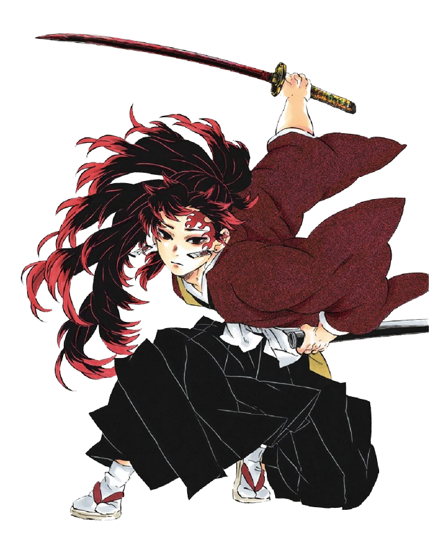

| Image | Info | Ability |
|---|---|---|
| Tanjiro Kamado is the main protagonist of Demon Slayer: Kimetsu no Yaiba. He is a Demon Slayer in the Demon Slayer Corps who joined to find a remedy to turn his sister, Nezuko Kamado, back into a human and to hunt down and kill demons,and later swore to defeat Muzan Kibutsuji,the King of Demons, in order to prevent others from suffering the same fate as him |
Tanjiro was already introduced to have above-average human abilities, like honed senses, a sharp sense of smell, immense willpower, and great intellect. |
|
|  | Yoriichi Tsugikuni is a major recurring character in Demon Slayer: Kimetsu no Yaiba. He is a Demon Slayer who lived nearly 500 years ago during the Sengoku era. He was the most powerful Demon Slayer to have ever existed. |
He has access to the Transparent World, allowing him to observe lung expansions and muscle contractions in his opponents and find their weaknesses instantly. |
| Kyojuro Rengoku was a major supporting character of Demon Slayer: Kimetsu no Yaiba and a major character in the Mugen Train Arc. He was a Demon Slayer of the Demon Slayer Corps and the Flame Hashira (炎えん柱ばしら En Bashira?) of the Taisho era. Unfortunately he was killed by Akaza, the Upper Rank demon. |
He can sense the presence of demons, determining whether they are Upper-Rank or lower. He can also tell what a demon's weakness is, as well as their regeneration speed. |